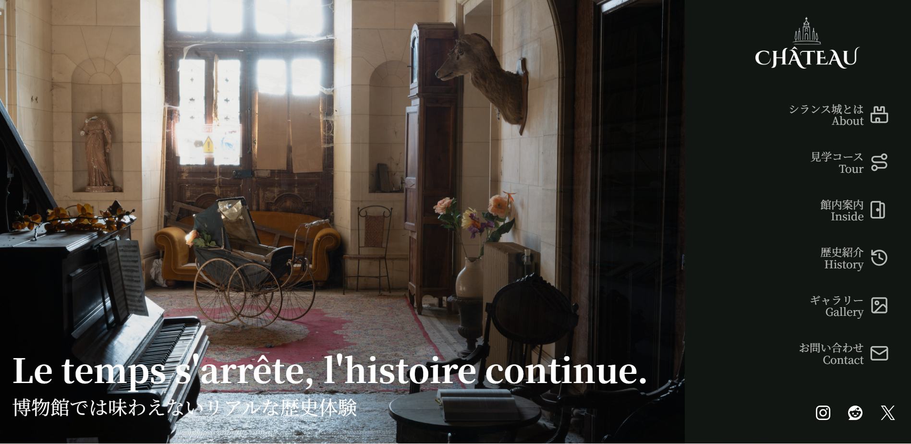
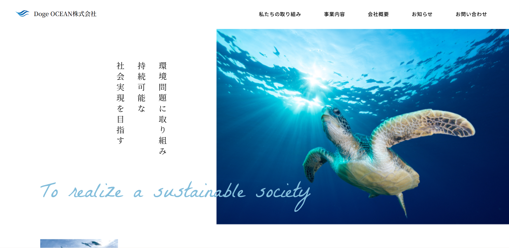
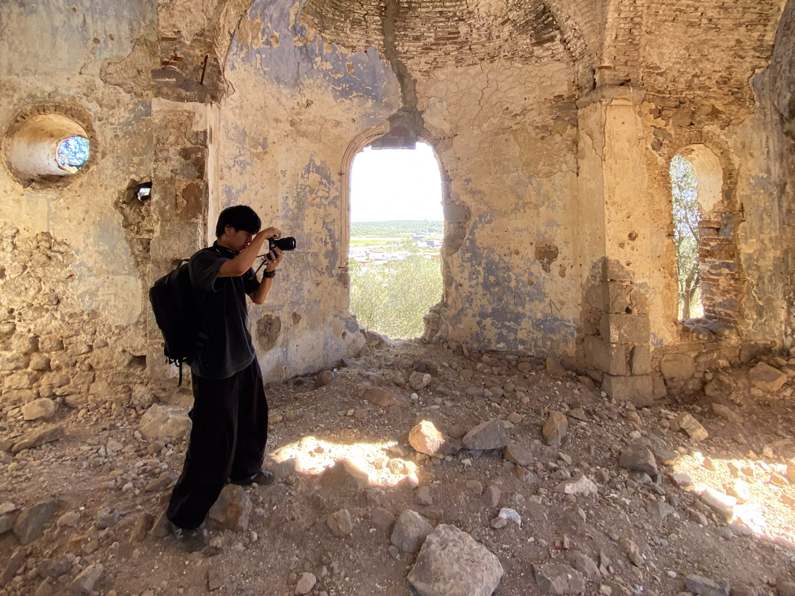
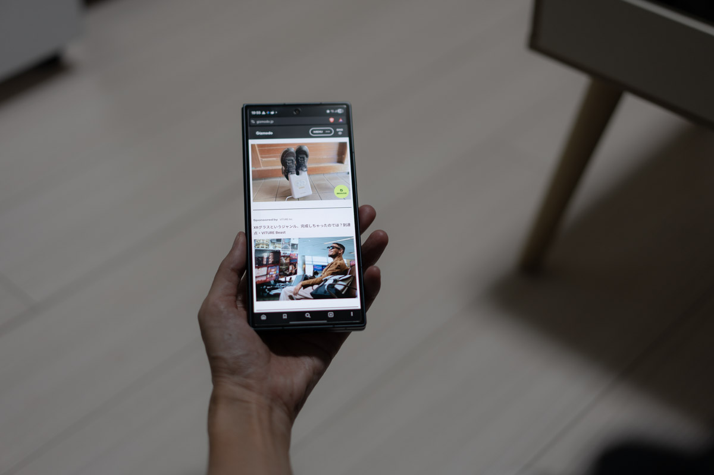
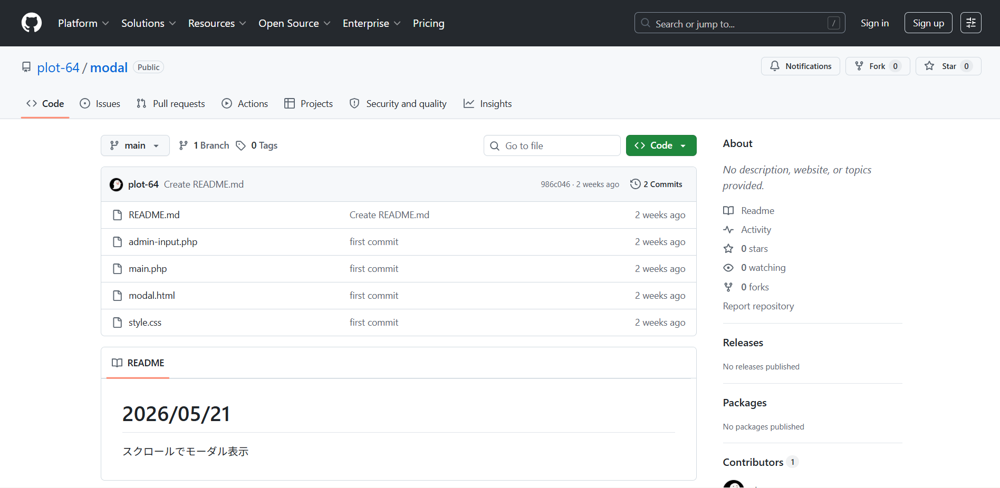
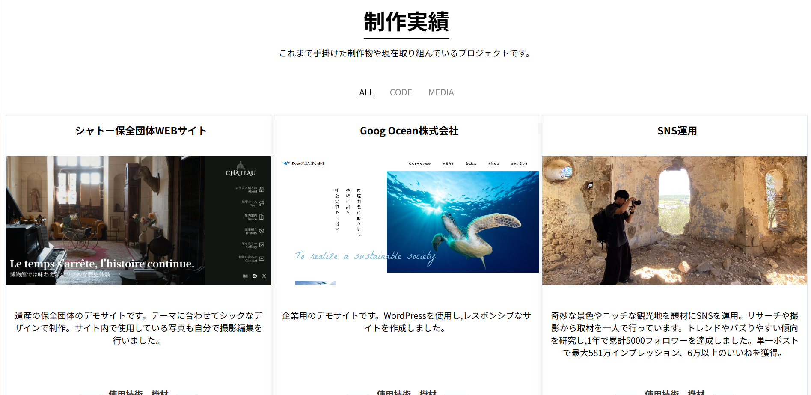
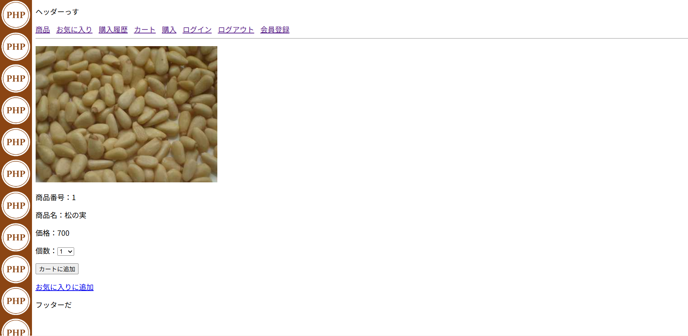
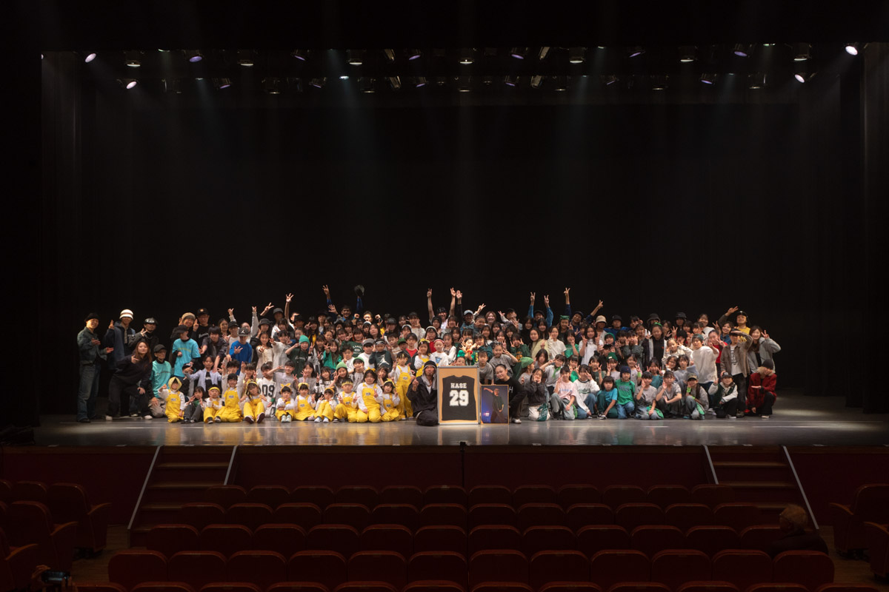

シャトー保全団体WEBサイト

遺産の保全団体のデモサイトです。テーマに合わせてシックなデザインで制作。サイト内で使用している写真も自分で撮影編集を行いました。
使用技術、機材
- HTML
- CSS
- PHP
- JavaScript
- Lightroom Classic
- Photoshop
これまで手掛けた制作物や現在取り組んでいるプロジェクトです。

遺産の保全団体のデモサイトです。テーマに合わせてシックなデザインで制作。サイト内で使用している写真も自分で撮影編集を行いました。

企業用のデモサイトです。WordPressを使用し,レスポンシブなサイトを作成しました。
ワードプレスを用いて開発しました。

奇妙な景色やニッチな観光地を題材にSNSを運用。テーマ設定から撮影や運営を一貫して行っています。
奇妙な景色やニッチな観光地を題材にSNSを運用。リサーチや撮影から取材を一人で行っています。トレンドやバズりやすい傾向を研究し,1年で累計5000フォロワーを達成しました。単一ポストで最大581万インプレッション、6万以上のいいねを獲得。

スマホの音量ボタンでマクロやアプリを呼び出せるマクロを作成しました。構造を工夫し,レスポンスと動作の確実性が保たれるように工夫しました。アプリも開発予定です。
スマホの音量ボタンの組み合わせで様々な操作ができるマクロを作成しました。合計１４個の命令を設定できます。
以前よりスマホの物理ボタンが音量のみに使われていることにもったいなさを感じていました。ちょうど学んでいたWEB開発での条件分岐や変数の知識を活かして改善できないかと考え作成しました。
ボタンの押し込み回数を検知するのが非常に難しく、変数を用いながら構造を工夫して作成しました。また入力回数に応じて入力待機フレームを設定することで、レスポンスを劇的に向上させました。
全体的な挙動の安定化 また,MacroDroid依存からの脱却と、完全単体アプリとしてのストアリリースを目標に開発中です

WordPressにてスクロールの距離に応じて広告を表示するプラグインです。
ワードプレスにて、スクロールした距離と連動して広告が表示されるプラグインです。二度表示されたりしないよう工夫して作成しました。

このポートフォリオサイトです。構造やJSによる表示の変化を練習するために,CMSを使用せず作成しました。
このポートフォリオサイトです。構造やJSによる表示の変化を練習するために,CMSを使用せず作成しました。ポップアップの構造を一つにまとめることで管理しやすいよう工夫しました。制作物が見やすいシンプルなデザインです。

SQLを使用して販売や在庫,注文処理などが出来る基礎部分を作成しました。
販売や在庫,注文処理などが出来るサイトです。ログインの構造やカートなどユーザーに合わせて動きが変わるサイトの基礎です。

大型のダンスのイベントの撮影。 撮影対象が非常に多いので,撮影にムラがないよう心がけて撮影しました。
ダンススタジオの発表会 撮影担当
参加者300人以上のイベントの撮影を一人で行いました。。なるべく全員に良い写真を届けるため2万枚以上撮影。Lrcにて大量に選定し偏りのないよう納品しました。質と量ともに好評いただき、別スタジオでの依頼も数件いただきました。
前撮りの依頼。撮影場所の選定から,撮影編集までを行いました
世界一周の経験や出来事を発信するメディアです。SNSでは乗せにくい体験や知識を文章でまとめたいと考えています。
制作中
公式ホームページの新調に伴う動画素材の撮影【制作中】